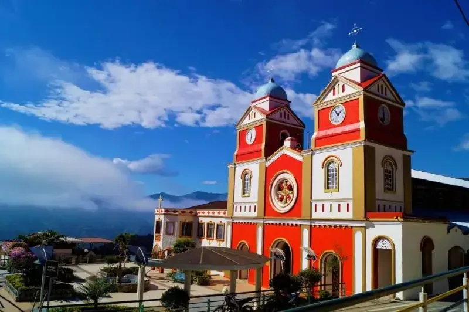

LOJANOVA 16/16 · Provincia de Loja
Chaguarpamba
Raíces que nos conectan
Chaguarpamba se convirtió en cantón con la publicación del Decreto 343, el 27 de diciembre de 1985. Una ordenanza municipal de 1990 estableció el 4 de diciembre como fecha de su conmemoración anual.
Reseña histórica · consultar fuente oficial ↗Descubre su oferta ↓
—Productos publicados
—Productores publicados
—Categorías con productos
Hecho en Chaguarpamba
Descubre sus productos.
Consultando la oferta publicada…
Personas que dan vida al territorio